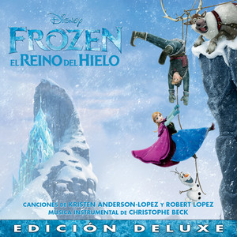

Canciones
- Canciones
- Brave
- Volaré
- Vaiana
- üé∏ Que hay más allá
- Un nuevo hogar
- De nada
- Brillante
- Coco
- Un poco loco
- El latido de mi corazón
- Recuérdame
- Frozen
- Suéltalo
- Muéstrate
- Por primera vez en años
- Hazme un muñeco de nieve
- Mucho más allá
- Toy story
- Hay un amigo en mi
Brave
Volaré
- Artista: Russian Red
- Álbum: Brave
- Fecha de lanzamiento: 2012
- Video: https://www.youtube.com/watch?v=Vy0VoyyxHEU
Intro Violín
[Verse]
D G D G
Allá donde el viento habla y el cielo es más azul
Bm A G D A
allá donde las estrellas te iluminan con su luz
Estribillo
[Verse]
D G
Allá donde el bosque esconde
D G
secretos que nunca sabrás
Bm A G
las montañas se hacen eco
D A
de historias de tiempo atrás
D G
Cruzaré ríos y valles
D G
y a las cumbres subiré
Bm A G
seré fuerte como las rocas
A D
y orgullosa gritaré
Estribillo
[Instrumental]
D G D A
Na-na Na-na Na-na Na-na Na Na Na-na Na
D G D A
Na-na Na-na Na-na Na-na Na Na Na-na Na
D G D A
Na-na Na-na Na-na Na-na Na Na Na-na Na
[Outro]
Vaiana

üé∏ Que hay más allá
- Artista: María Parrado
- Película musical: Vaiana
- Fecha de lanzamiento: 2016
| Tonalidad | Tempo | Compás | Capo |
|---|---|---|---|
| Mi mayor | 84 bpm | 4/4 | No |
Estrofa
E B/F# C#m
He buscado siempre aquí una respuesta, Esperando en la orilla
Asus2
Y no sé muy bien por qué,
E B/F# C#m
Sólo quiero ser la hija perfecta, Pero regreso a la orilla,
Asus2
no hay nada que pueda hacer.
[Bridge]
C#m B/D#
Cada amanecer, cada sensación, Cada atardecer, al caer el sol,
E Am6
Vuelvo a imaginar que hay algún lugar donde debo ir...
F C
Hoy la línea entre el cielo y el mar me llama, Dm A# Y ¿quien sabrá, a donde irá? F C Y si el viento que sopla de cola me lleva, Dm Dm/C G# Sabré al final yo que hay más alláa ```
Un nuevo hogar
| Tonalidad | Tempo | Compás | Capo |
|---|---|---|---|
| La mayor | 101 bpm | 4/4 | No |
| Estrofa | |||
| ``` | |||
| A | |||
| Tatou o tagata folau e vala'auina | |||
| A | |||
| E le atua o le sami tele e o mai | |||
| D | |||
| Ia ava'e le lu'itau e lelei | |||
| E A | |||
| Tapenapena | |||
| ``` | |||
| Estribillo | |||
| ``` | |||
| D | |||
| Aue, aue | |||
| A | |||
| Nuku I mua | |||
| E A | |||
| Te manulele e tataki e |
D Aue, aue A Te fenua, te malie, E Nae ko hakilia mo kaiga e
**Estrofa**
```
A
Sabemos el viento leer Con gran nitidez,
A
Surcamos el ancho mar Con facilidad,
D E A
Y cada estrella ahí está Justo en su lugar,
A
Sabemos mirar de verdad
```
**Estribillo**
D F#m Aue, aue, No dejaremos nunca de explorar, E E Las tradiciones transmitimos en un ciclo sin final,
D Aue, aue, A Te fenua, te mālie E Nā heko hakilia E A Un nuevo hogar
<div style="page-break-after: always;"></div>
## De nada
| Tonalidad | Tempo | Compás | Capo |
| --------- | ------- | ------ | ---- |
| Fa mayor | 135 bpm | 4/4 | No |
**Verse**
Estrofa ``` C F/C ¡Hey! ¿Quién levantó el cielo con su pulgar A# cuándo ni caminabais? ¡El menda! C C Cuándo el frío llegó, F/C ¿quién piensas que el fuego robó? A# ¡Lo tienes delante!
C F/C ¡Oh! También cacé un día el sol–de nada- A# C para darte luz y calor. C F/C El viento también domé –¡de nada!- A# C y así los barcos impulsé.
Am F C ¿Qué puedo decir? Solo «de nada» E7 Am por las islas que hice emerger F C por las islas que hice emerger E7 Am para que podáis vivir –de nada-. ¡Ja F C ¡De nada! De nada. C de nada[Rap]
Bien, piénsalo un poco...
C
Oye, puedo seguir y seguir aún más;
puedo explicar cada cosa desde el Big Bang:
C
las mareas, la hierba, la tierra...
fue sólo Mauí que estaba de fiesta.
C
Maté una anguila, su cuerpo enterré,
un árbol brotó y ahora cocos tenéis.
C
¿Cuál es el punto? Aprende la lección:
ojo con Mauí si ves que está en plena acción.
Am Y el tapiz que he pintado en mi piel F es un mapa de lo que logré. C Míralo bien, hago que todo pase. E7 Mira, aquí hay un mini-Mauí bailando claqué.
Ja, ja, ja, ja, ja, ja. ¡Ey!
Am F C Deja que diga otra vez «de nada» (de nada) E7 Am por crearos un mundo así. F C No hay de qué, está bien, de nada (de nada). E7 Am Medítalo muy bien, te digo adiós. F C
Te toca a ti decir «de nada» (de nada),
E7 Am
pues en tu barco me voy.
F C
Muy lejos navegaré –de nada (de nada)-,
E7 Am
todo menos flotar puedo hacer yo.
[Outro]
F/C
(De nada) De nada
C
(De nada) de nada
C
Y gracias!
```
Brillante
| Tonalidad | Tempo | Compás | Capo |
|---|---|---|---|
| Do mayor | 73 bpm | 4/4 | No |
| Estrofa | |||
| ``` | |||
| Em Am | |||
| Hace tiempo no tenía este | |||
| Em Am | |||
| glamour Fui un cangrejito muy soso... | |||
| Em Am | |||
| Pero ahora estoy feliz y en | |||
| Cm Am7b5 | |||
| plenitud, Porque soy muy bello, nena. |
Em Am Tu corazón tu abuela te hizo Em Am escuchar. Sé cómo eres por dentro. Em Am Ese argumento yo lo voy a Cm Am7b5 desmontar, Ella mintió. Mejor ser:
G C ¡Brillante! Cual tesoro de un navío que se G C hundió. La cubierta tengo G C ¡Brillante! Igualito que un collar de un D millón ¡Un segundo! ¿Sabes que...Em C ...Los peces tontos son: Em Buscan siempre algo brillante. C D ¡Principiantes! Em C Oh Y van sin ton ni son Am Hacia aquello más radiante. D ¡Mmm qué rico! Eb Ven, pescadito (pescadito) Eb con vestidito (¡pescadito!)
¡Vaya, vaya, Em Am vaya...! Maui tiene, con su aspecto, un Em Am problemín. Pequeño semi-mini-mini-dios. Em Am ¡Auch! ¡Qué espectáculo terrible!¡Ven Cm D aquí! Vale. El anzuelo grande ya te
Em Am va. Sin embargo algo te he de Em Am agradecer, Y a los tatoos de tu cuerpo, Em Am Pues yo también de mí una obra de arte Cm Am7b5 creé. ¿O no lo ves? Yo soy muy
G C
¡Brillante! Yo reluzco cual diamante o cual G C D rubí, Soy así, un tipo G C ¡Brillante! Ni un ejército me haría Am D sucumbir. Me basto a mí. Maui, tío...
Em C Lo puedes intentar, Am D Pero nunca antes un semi-dios Ganó a un decápodo.¡Míralo! Em C Tú ahora morirás, Am D Yo te sacaré con precisión Tu corazón.
Eb Bb Eb Lejos de aquellos que te abandonaron Bb Eb Bb Buscaste entre humanos amor y cariño. C Dm Muy duro te crees, Eb F Pero tu coraza frágil es.
Bb ¡Maui! G# ¡Ahora voy a patearte! ¿Viste a alguien tan...
G C ...Brillante? Lo último que tú verás será a G C F mí. C'est la vie, mon ami... G Am ¡Soy brillante! Un deseo antes de comerte G D pedirás. ¡Morirás! Eb Jamás serás tan radiante, Eb Jamás serás tan G ¡brillante!<div style="page-break-after: always;"></div>
# Coco

<div style="page-break-after: always;"></div>
## Un poco loco
| Tonalidad | Tempo | Compás | Capo |
| --------- | ------- | ------ | ---- |
| Sol mayor | 126 bpm | 3/4 | No |
**Intro**
D G Vez todo al revés D G ¡Ay mi amor! ¡Ay mi amor! D G Creo que piensas con los pies D G ¡Ay mi amor! ¡Ay mi amor!
G C Tú me traes un poco loco D G Un poquititito loco G C Estoy adivinando D G Que quieres y pa' cuando G D Y así estoy celebrando C D G Que me he vuelto un poco loco..
D G D G D G D G D G D G E A D Chiflado tú me vuelves E A Y eso está un poco loco A D Tu mente que despega E A Tú siempre con ideasA E
Con mi cabeza juegas
D E A
Todo es un poco loco..
[Outro]
A D
Todo es un poco loco
E A
Con mi cabeza juegas
A D
Todo es un poco loco
E A
Con mi cabeza juegas
A D
Todo es un poco loco
E A
Con mi cabeza juegas
A D
Todo es un poco loco
E A
Con mi cabeza juegas
A D E A
Un poquitititi titi titi titi tititito loco
```
El latido de mi corazón
| Tonalidad | Tempo | Compás | Capo |
|---|---|---|---|
| Fa mayor | 174 bpm | 3/4 | 3 |
| Intro | |||
| ``` | |||
| D C G D | |||
| ``` | |||
| Estrofa | |||
| ``` | |||
| D C | |||
| Dirás que es raro | |||
| G D C G D | |||
| Lo que me pasó | |||
| D C | |||
| Parece que anoche | |||
| G D C G A | |||
| Te encontré en mis sueños | |||
| G | |||
| Las palabras que dije | |||
| G | |||
| Se volvieron canción | |||
| D A | |||
| versos que tuyo son | |||
| G A | |||
| Y el recuerdo nos dio | |||
| ``` | |||
| Estrofa | |||
| ``` | |||
| D G A D | |||
| Una melodía bella que el alma tocó | |||
| D G A Bm | |||
| Con el ritmo que vibra En nuestro interior | |||
| D G A Bm | |||
| Amor verdadero nos une por siempre | |||
| D G A Bm | |||
| En el latido de mi corazón | |||
| D G A Bm | |||
| Amor verdadero nos une por siempre | |||
| D G A D | |||
| En el latido de mi corazón | |||
| ``` | |||
| [Instrumental] | |||
| ``` | |||
| B7 | |||
| ``` | |||
| Estribillo | |||
| ``` | |||
| E A | |||
| Ay, mi familia | |||
| B E | |||
| Oigan mi gente | |||
| E A B | |||
| Canten a coro nuestra canción | |||
| E A B C#m | |||
| Amor verdadero nos une por siempre | |||
| E A B E | |||
| En el latido de mi corazón | |||
| ``` | |||
| Estribillo | |||
| ``` | |||
| E A | |||
| Ay, mi familia | |||
| B E | |||
| Oigan mi gente | |||
| E A B | |||
| Canten a coro nuestra canción | |||
| E A B C#m | |||
| Amor verdadero nos une por siempre | |||
| E A B E | |||
| En el latido de mi corazón | |||
| ``` | |||
| ## Recuérdame | |||
| Tonalidad | Tempo | Compás | Capo |
| ---------- | ------ | ------ | ---- |
| Fa # mayor | 80 bpm | 4/4 | No |
| Intro | |||
| B | Bb Ebm | D | Db |
| Estrofa | |||
| ``` | |||
| F# Bm | |||
| Recuérdame hoy me tengo que ir mi amor | |||
| F# E9 A#7 | |||
| Recuérdame, no llores por favor | |||
| D#m E F#7 | |||
| Te llevo en mi corazón y cerca me tendrás | |||
| B D C#7 | |||
| A solas yo te cantaré soñando en regresar | |||
| ``` | |||
| Estrofa | |||
| ``` | |||
| F# Bm/D# | |||
| Recuérdame, aunque tenga que emigrar | |||
| F# C#m7 F7 | |||
| Recuérdame, si mi guitarra oyes llorar | |||
| B Bbm B/D Ebm | |||
| Ella con su triste canto te acompañará | |||
| D C#sus4 | |||
| Hasta que en mis brazos estés | |||
| C#sus4 D E F# | |||
| Re-----cuérdameee | |||
| ``` | |||
| [Interlude] | |||
| ``` | |||
| F# | Bm/D | F# | Bm Bb |
| D#m | E F# | B | D Db |
| ``` | |||
| Estrofa | |||
| ``` | |||
| F# Bm | |||
| Recuérdame hoy me tengo que ir mi amor | |||
| F# E A#7 | |||
| Recuérdame, no llores por favor | |||
| D#m E F# | |||
| Te llevo en mi corazón y cerca me tendrás | |||
| B D C#7 | |||
| A solas yo te cantaré soñando en regresar | |||
| ``` | |||
| Estrofa | |||
| ``` | |||
| F# Bm | |||
| Recuérdame, aunque tenga que emigrar | |||
| F# C#m F# | |||
| Recuérdame, si mi guitarra oyes llorar | |||
| E Bbm Bb7 Ebm | |||
| Ella con su triste canto te acompañará | |||
| D C#sus4 | |||
| Hasta que en mis brazos estés | |||
| Gbm/Db D E F# | |||
| Re cuérdameee | |||
| ``` |
Frozen

Suéltalo
| Tonalidad | Tempo | Compás | Capo |
|---|---|---|---|
| La b mayor | 80 bpm | 4/4 | 1 |
Intro
Estrofa
Em Cmaj7 D Asus4 Am
La nieve brilla esta noche aquí más ni una huella queda ya
Em Cmaj7 D Asus4 Am
soy la reina en un reino de aislamiento y soledad
Em Cmaj7 D Asus4
el viento aúlla y se cuela en mi interior
Em D Asus4 A
lo quise contener pero se escapó
Pre-chorus 1
D C
No dejes que sepan de ti
D
"que no entren" siempre me dijo a mi
C
"no has de sentir no han de saber"
Cadd9*
¡ya que más da!
Chorus
G Dsus4/F# Em7 Cadd9
¡Suéltalo! ¡suéltalo! no lo puedo ya retener
G Dsus4/F# Em7 Cadd9
¡suéltalo! ¡suéltalo! ya no hay nada que perder
G Dsus4/F# Em7 Cadd9
que más da, ya se descubrió,
Bm Bb
déjalo escapar
C Gsus4 G D/F#
el frío a mi nunca me molestó
Verse 2
Em C D Am
Desde la distancia que pequeño todo es
Em Dsus2 Asus4 A
el temor que me aferraba no me va a hacer volver
Pre-chorus 2
D C D
Soy libre y ahora intentaré, sobrepasar los límites
C Cadd9
ya no hay mas reglas para mi, ¡por fin!
Chorus
G Dsus4/F# Em7 Cadd9
¡Suéltalo! ¡suéltalo! que el frío reine ya
G Dsus4/F# Em7 Cadd9
¡suéltalo! ¡suéltalo! no volveré a llorar
G Dsus4/F# Em7 Cadd9
aquí estoy y aquí estaré,
Bm Bb
déjalo escapar
Interlude
Bridge
Csus2
En las entrañas de la tierra puedo entrar
mi alma crece y hace espirales sin parar
D
y un pensamiento en mi surgió y cristalizó
Em C D Am
ya no regresaré el pasado ya pasó
Chorus
G Dsus4/F# Em7 Cadd9
¡Suéltalo! ¡suéltalo! subiré con el amanecer
G Dsus4/F# Em7 Cadd9
¡suéltalo! ¡suéltalo! la farsa se acabó
G Dsus4/F# Em Cadd9 Cmadd9
Que la luz salga otra vez
Bm Bb
¡déjalo escapar!
C
el frío a mi nunca me molestó
Muéstrate
| Tonalidad | Tempo | Compás | Capo |
|---|---|---|---|
| Fa # Mayor | 123 bpm | 4/4 | No |
Intro
N.C.
Pues claro, los glaciares son rios de hielo
N.C.
El Ahtohalan está helado
N.C.
ah-aaaah-aah-aaaaah
F# C# F# B
Te oigo, estoy llegando
F# C#
Siento que todo me tiembla
F# B
Del frío no eeeeeeees
F# C#
Hay algo en el aireee
F# B
Como un sueño que está, pero no ves
F# C#
Sé que estás ahiiiiií
D#m C#
Como un amigo fieeeeeeel
B C#
Estoy llegandooo
F# B
Y por fin me encuentro bieeeeeeeen
C#add4 C#add4/B B
Siempre fui una fortaleza Con secretos que guardar
Badd4 A A/D D
Justo como tú, pero no te escondas más
D#m B C#add4
Muéstrate, quiero conocerte
D#m B C#
Muéstrate, te toca a ti
D#m B F# C# A#7
Eres quizá aquello que siempre Yo añoree ee ee eeeeeeé
D#m B G#
Muéstrateeee, yo quiero aprender
D#m B
Ah-aah-ah-aaah
Em A
Ah-aah-ah-ah-aaaaah
G5 D/F# G5 G5/A
Jamás lo vi tan claro, Todo en mí era temooooooor
G D/F# G C
Pero aquí estoy por algo, yo he nacido por una razón
D Dadd4/C C
Siempre he sido diferente, como de otra realidad
Bb
Será el día hoy, serás tú quien
Eb D
me enseñe mi verdaaaaad
N.C Em C D
Muéstrate, ya no estoy temblando
N.C Em C D
Aquí estoy, No hay vuelta atrás
Em C G D
Llevo esperando una vida y yo, quiero entendee ee eer
N.C Em C A7
Oh, muéstrate, que ya te quiero ver
D D7
Ven a mí ya, déjame entrar
Em C G
No esperaré, ni un día más
D
Ven a mí ya, déjame entrar
Em C G
No esperaré, ni un día más
Verse 3
B D#m G#
Donde el viento halla el mar (ah ah ah ah)
B F#
Por un río (ah ah ah ah) la memoria va (madre!)
G# B
Ven, mi amor, hacia tu hogar
B
¡Aquí estoooooy!
Fm Db Eb
Muéstrate, Que el poder te dé fuerza
Fm Db Eb
elévate, Mucho más allá
Fm Db
Has esperado una vida, y tú
Ab Eb
¡Y aquí estoy! - ¡Aquí estás!
Fm Db
Muéstrateeeeeeeeeeeeee
Por primera vez en años
| Tonalidad | Tempo | Compás | Capo |
|---|---|---|---|
| 95 bpm | 4/4 | No |
Verse
F Bb/F
La luz está entrando en el salón
Fmaj7 Bb/F
Por fin, se ilumina cada rincón
F F/A C
Y ahora sacan la vajilla real
F Bb/F
Por estos salones deambulé
Fmaj7 Bb/F
Sola vagué una y otra vez
Dm Dm/C Bbm7b5 G7
Hoy por fin las puertas se abriráaaaaaaaaan
Dm Am
Y vendrán de todas partes
C A#
Qué raro se me va a hacer
Eb Csus2/4
Hay tantas cosas que quiero emprender
```
**Chorus**
Dm Dm/C
No sé si es emoción o gases
Bbmaj7 G9/B
Pero hay algo en mi interior
F5/Ab Bbsus2
Pues por primera vez en años
C7sus F
Me late el corazón
**Interlude**
N.C.
Voy a conocer a muchas personas
N.C.
¿Y si encuentro hoy la persona?
**Verse**
F# B/F#
Vestido de gala llevaré
D#m C#
Con pose estudiada esperaré
F# B D#m C#
Sofisticada y tierna a la vez
F# B
Y de repente allí estará
D#m C#
Un joven galán se acercará
F# B D#m C#
Y de los nervios me pondré a comer
D#m A#m
Y luego reiremos juntos
C# B
Charlaremos sin parar
E C#
Como nunca pude imaginar
**Chorus**
F# B
Por primera vez en años
C# F#
Habrá magia y diversión
D#m A#
Por primera vez en años
E C#
Me prestará alguien su atención
D#m A#m
Ya sé que es una locura
C# B
Pensar en el amor
F# B
Mas por primera vez en años
C# F#
Me late el corazón
**Interlude**
D#m A#m
(Elsa) No dejes que sepan de ti
C# G#
Que no entren, siempre me dijo a mí
D#m A#m C#
No has de sentir, No has de esconder
G#m A#m
Un paso en falso y se echará a perder
F# C#
Elsa: Pero pronto pasará (Pronto pasará)
B C#
Anna: Qué duro es esperar (Qué duro es esperar)
**Verse**
Em Bm C F
Que abran el portón de par en par (En par)
G C
Por primera vez en años (No dejes que sepan de ti)
D G
Tendré lo que siempre soñé (Que no entren siempre me dijo a mí)
Em C
Esta ocasión es la mejor (No sé)
F D
Para encontrar mi amor (No has de sentir, no han de saber)
Em Bm
Mañana todo habrá acabado
D C
Solo tengo el día de hoy
Em C
Pues por primera vez en años
G C
Por primera vez en años
F C
Me late el corazón
```
Hazme un muñeco de nieve
| Tonalidad | Tempo | Compás | Capo |
|---|---|---|---|
| Mi bemol Mayor | 76 bpm | 4/4 | 3 |
Introduccion
Verse 1 C G/B
Hazme un muñeco de nieve! Venga vamos a jugaaar
G F Am Gm C/E
Ahora ya no te puedo ver, no sé muy bien lo qué ha podido pasaaaaaaaar!
F C F E Am D
Eramos inseparables, y ahora ya no, no lo logro comprendeeeeeer!
Dm Fm/G#
Hazme un muñeco de nieve! O lo que sea me da igual!
Elsa: Déjame Ana
Fm C
Ana: Vale, adiós
Ab C | Ab C | C |
Ab G
```
**Verse 2**
Interludio
Hundimiento del barco Ana: ¿Elsa?Verse 3
C G
Sé que estás ahí dentro. Siempre preguntan donde estás
F Am Em
Dicen que intenté tener valor, Pero ya no puedo más, déjame entrar
F G C E7 Am Em/B D7
Ya no nos queda nadie, solo tú y yo, ¿Y ahora qué va a pasa aaaar?
C
Hazme un muñeco de nieve!
Mucho más allá
| Tonalidad | Tempo | Compás | Capo |
|---|---|---|---|
| Re bemol Mayor | 148 bpm | 4/4 | No |
Intro
[Verse 1]
D#m D#m9 D#m
Puedo oírte, déjalo
G# G#9 G#
Hay quien se arriesga pero yo no
F# C#/F#
Más de mil razones hay para seguir igual
F# C#/F# D#m
Oigo tus susurros que ojalá se fueran yaa ooooh,
D#
No habla una voz, eres un ruido en mi interior
G# G#9 G#
Y aunque te oyera -y es que no- no hay más que hablar, adiós
F# C#/F#
Todo aquel que he querido está en este lugar
G# A#7
Perdóname sirena no te voy a escuchar
Estribillo
D# G# Cm
Mucho más allá, Mucho más allá, Mucho más allá
D#m G#
Ooh ooh oh ooooh
D#m G#
Ooh ooh oh ooooh
[Verse 2]
D#
¿Qué quieres tú? Ya no me dejas ni dormir
G#
¿Has venido a distraerme? No me quieras confundir
F# C#/F#
O tal vez seas alguien que es muy parecido a mí
G#sus4 A#
Que en su interior sabe que no es de aquí
Cm
Cada día es más difícil según crece mi poder
G#sus4 G# A#m
Algo hay en mi interior que quiere ir
Estribillo
Puente
A# G# G#
Ahora puedes conocerme, arroparme, enseñarme
C
Ooh ooh (oohooh)
F
Ooh ooh (oohooh)
C
Ooh ooh ooh ooh
C
Ooh ooh ooh ooh
Final
Toy story
Hay un amigo en mi
Capo 3
C Gaug C C9
Hay un amigo en mí
F F#dim C C7
hay un amigo en mí
F C/E E7 Am
Cuando eches a volar
F C/E E7 Am
Y tal vez añores tu dulce hogar
F B/F# C/G E/G# F E Am
Lo que te digo debes re-cor-dar
D7 G7 C A7
Porque hay un amigo en mí
D7 G7 C
Sí hay un amigo en mí
C Gaug C C9
Hay un amigo en mí
F F#dim C C7
Hay un amigo en mí
F C E7 Am
Y cuando sufras aquí me tendrás
F C E7 Am
No dejaré de estar contigo ya verás
F C E7 Am
No necesitas a nadie más
D7 G7 C
Porque hay un amigo en mí
D7 G7 C C7
Hay un amigo en mí
F B
Otros habrá tal vez mucho más listos que yo
C6 B7 C6
Eso puede ser tal vez
B7 Ddim7 B/F#
Mas nunca habrá quien pueda ser
Em A7 Dm7 G7
Un amigo fiel y tú lo sabes
C Gaug C C7add9
El tiempo pasará
F F#dim C
lo nuestro no morirá
F F#dim C E7 A7
Lo vas a ver es mejor saber
D7 G7 C A7
Que hay un amigo en mí
D7 G7 C A7
Hay un amigo en mí
D7 G7 C
Hay un amigo en mí